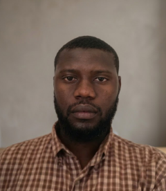
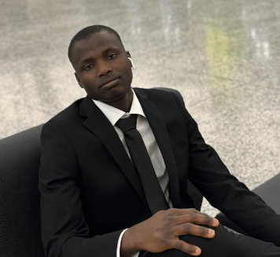
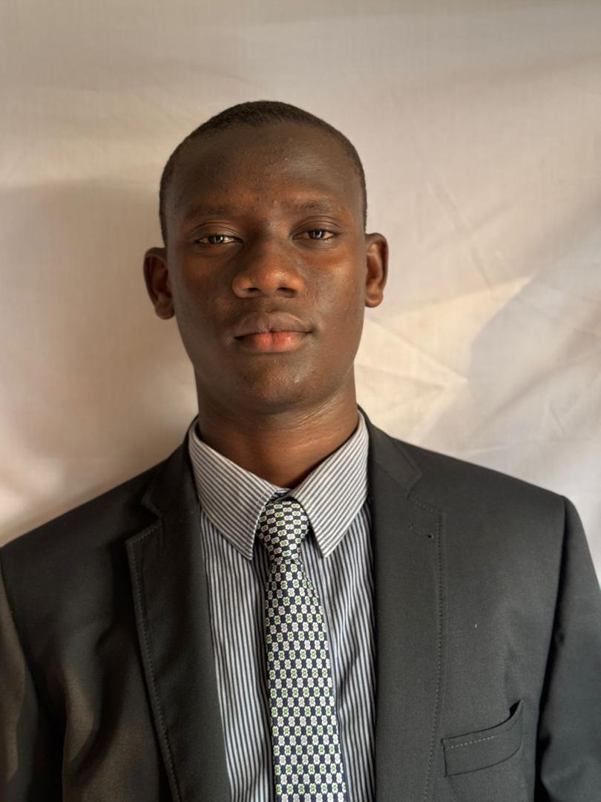
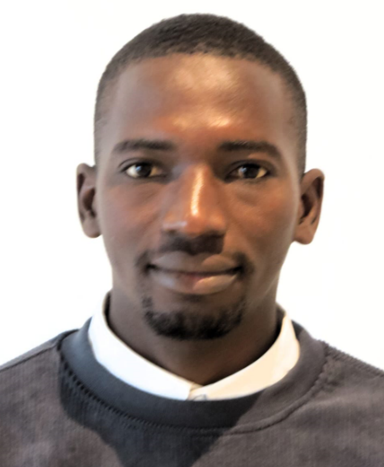
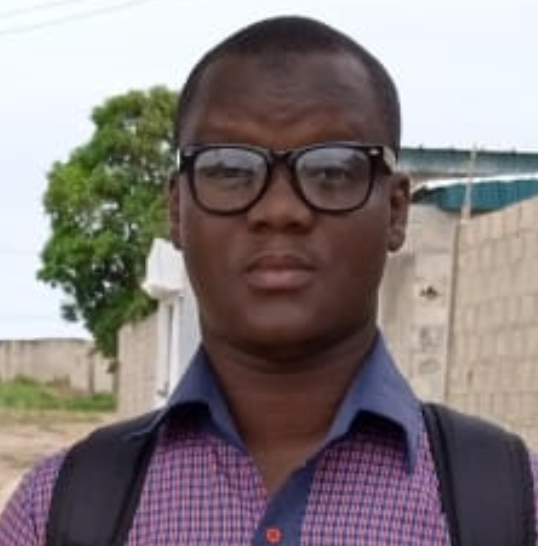

Mission
Fédérer les citoyens autour de projets concrets à impact social, scientifique et environnemental.
Une association citoyenne née de la conviction que le développement de la France se construit avec, et par, ses citoyens.

Le Mouvement Avenir Citoyen (MAC) est une organisation qui rassemble des citoyens partageant une même vision : contribuer activement au progrès économique, social, scientifique et environnemental de la France.
Convaincus que le développement passe par la participation de chacun, nous encourageons les initiatives locales, la recherche, l'innovation, la formation et l'engagement citoyen.
Notre approche repose sur la collaboration, le partage des connaissances et la mise en œuvre de projets concrets répondant aux besoins réels des populations, dans les grandes villes comme dans les zones rurales.
Notre mission est de fédérer, former et outiller les citoyens ivoiriens pour qu'ils deviennent acteurs du changement, à travers l'éducation, l'innovation, la recherche et l'action de terrain.
Fédérer les citoyens autour de projets concrets à impact social, scientifique et environnemental.
Une société ivoirienne innovante, solidaire et actrice de son propre développement durable.
Intégrité, innovation, solidarité, durabilité, excellence et citoyenneté guident chacune de nos actions.
Cinq axes structurent l'action du MAC sur le moyen terme, portés par nos sept pôles.
Implanter des cellules locales du MAC dans les 12 régions couvertes et former 5 000 relais citoyens d'ici 2030.
Déployer des formations en IA, data et outils numériques auprès de 10 000 jeunes et créer un centre de recherche appliquée.
Accompagner 200 porteurs de projets par an via l'incubation, le mentorat et la mise en réseau avec des partenaires financiers.
Planter 100 000 arbres, sensibiliser 50 communes à la gestion des déchets et promouvoir l'agriculture durable.
Octroyer 500 bourses d'excellence et déployer un programme de mentorat scolaire dans les zones rurales.
Une équipe bénévole, engagée et pluridisciplinaire, élue pour un mandat de trois ans.

Il porte la vision du mouvement.

Il garantit la transparence financière et le suivi des projets.

Il supervise l'administration, la gouvernance et le suivi des instances du mouvement.

Il assure la coordination du mouvement à Abobo.

Il assure la coordination du mouvement à M'Batto.
Il assure la coordination du mouvement à Yopougon.

Il identifie, développe et pilote des solutions technologiques innovantes.

Il assure la coordination du mouvement à Bouaké.
Le MAC avance grâce à ses membres. Chaque compétence, chaque énergie compte.
Devenir membre